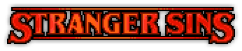

Stranger Sins



Stranger Sins Logo
Stranger Sins Description
6-12 hours of extra gameplay. Build and run your own tavern. Finally you will have your own bar! Arrange the Rat race and Stand-up events. Get to know villagers better by completing dozens of new quests. Help Gerry to do the total recall. Witness the events of 200 years ago that will reveal the history of the game world and your role in it.
Backstory is not the only thing. Do you remember Lumberjack, Beekeeper, Corey and Tress brothers and other silent NPCs? Almost all of them will find a voice and character in this DLC. And this character will be even more crazy than in the original game. In search of mysterious artifacts of antiquity you will learn more about the backstory and relationships of these NPCs. If you convince them to talk.
Questions
Do I need to replay the main game?
You can pass the DLC both from the beginning and after the whole game.
How many hours of gameplay time for beginners and for those who have passed the game?
If the game is already completed — DLC will take at least 4-5 extra hours. If you are new to the game, 6-12 extra hours (depending on your level of progress).
Are there new achievements?
Yep!
Is there a town in the DLC?
No. Since the focus will be on the history of the village. But you will be able to witness some of the events from the past that took place in the city.
Tavern management? Really?
Hell yeah! It's like in real life: selling alcohol and food, event management, you can even build an automated alcohol production chain. This will bring additional income.
What should we expect in the DLC game?
A large number of staged cut-scenes in which you will learn what happened to this world two centuries ago, what caused the decline of ancient civilization, on the ruins of which the village was built. And most importantly, who are the Graveyard Keepers?
Free or Paid DLC?
Paid.
What about the music?
New music will appear in the DLC, plus it will be added to the DLC with soundtracks for free.
Features
- New building - Talking Skull Tavern
- Business opportunity of selling alcohol and food
- Quality score for furniture and (quest line) trophies
- Four events to organize
- Quest line for Village backstory
- New zombie technology - automatic wine and semi-automatic beer production